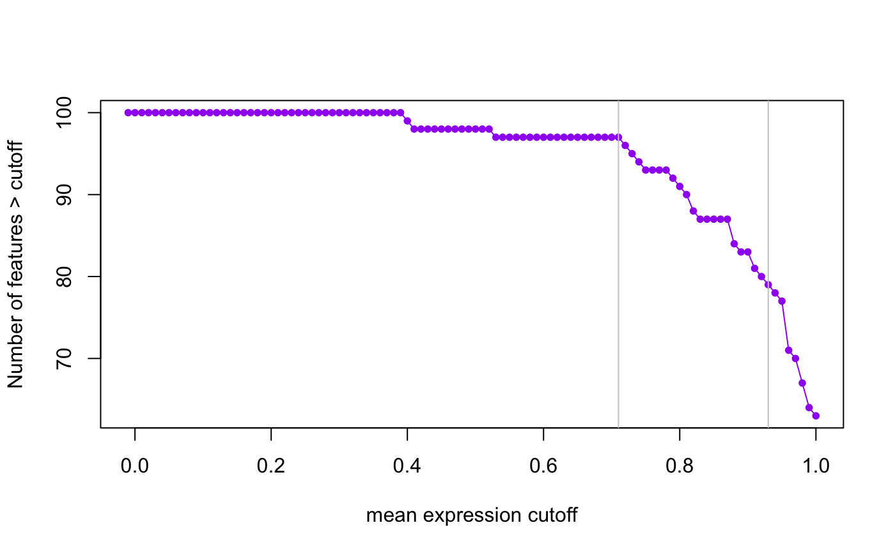
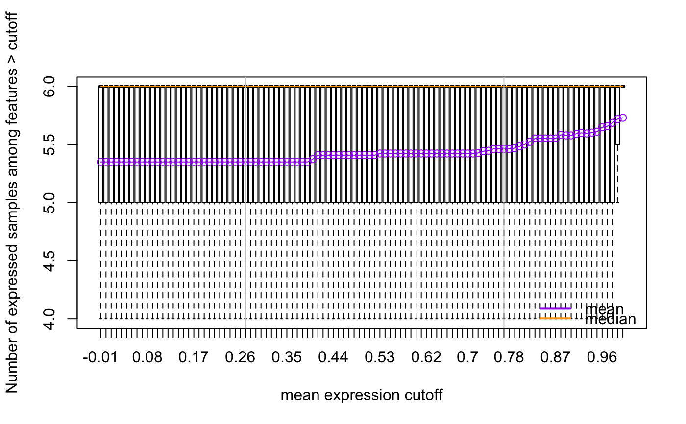

This function finds expression cutoffs based on estimating the second breakpoint using segmented applied to two curves. The first curve is the number of features passing the cutoff assuming an initial large drop, an intermediate section with moderate drop, and then a stable tail. The second curve is the mean number of expressed samples (non-zero expression) for all genes at each given cutoff. This curve increases rapidly then has a section with a moderate increase, and finally a long tail. Using segmented we find that second breakpoint. The suggested expression cutoff returned is the average of the two suggested cutoffs.
expression_cutoff(expr, max_cut = 1, seed = NULL, n.boot = 2000, k = 2)
| expr | A matrix with the expression values with features in the rows and samples in the columns in RPKM format. |
|---|---|
| max_cut | Maximum expression cutoff to consider. Increasing this value
does then to increase the suggested cutoffs. If set to |
| seed | Set this argument for increased reproducibility of the results. This is passed to seg.control. We highly recommend specifiying this value. |
| n.boot | This argument controls the stability of the suggested cutoffs. It is passed to seg.control. |
| k | The number of breakpoints to consider. If you increase this value the estimated breakpoints are less stable. |
A two element vector with the suggested cutoffs based on the number of features expressed and the mean number of expressed samples across all features. The function also makes plots that visualize both curves and show the identified breakpoints as vertical grey lines.
## Simulate expression data. Based on the limma::lmFit() man page sd <- 0.3*sqrt(4/rchisq(100,df=4)) y <- matrix(rnorm(100*6,sd=sd),100,6) rownames(y) <- paste("Gene",1:100) y[1:2,4:6] <- y[1:2,4:6] + 2 ## Make the expression data look like RPKM values y2 <- apply(y, 2, function(z) { res <- z + abs(min(z)) res[sample(seq_len(100), 10)] <- 0 res }) summary(y2)#> V1 V2 V3 V4 #> Min. :0.000 Min. :0.0000 Min. :0.0000 Min. :0.0000 #> 1st Qu.:0.812 1st Qu.:0.5794 1st Qu.:0.6757 1st Qu.:0.7014 #> Median :1.061 Median :0.8119 Median :0.9338 Median :1.0135 #> Mean :1.002 Mean :0.8070 Mean :0.8705 Mean :0.9828 #> 3rd Qu.:1.264 3rd Qu.:1.0926 3rd Qu.:1.1058 3rd Qu.:1.2464 #> Max. :2.472 Max. :2.1606 Max. :1.9088 Max. :3.3155 #> V5 V6 #> Min. :0.000 Min. :0.000 #> 1st Qu.:1.107 1st Qu.:1.435 #> Median :1.470 Median :1.699 #> Mean :1.364 Mean :1.558 #> 3rd Qu.:1.710 3rd Qu.:1.894 #> Max. :3.563 Max. :3.829expression_cutoff(y2)#>#> percent_features_cut samples_nonzero_cut #> 0.93 0.77## Or same the plots to a PDF file pdf('test_expression_cutoff.pdf', width = 12) expression_cutoff(y2)#>#> percent_features_cut samples_nonzero_cut #> 0.93 0.77dev.off()#> pdf #> 2